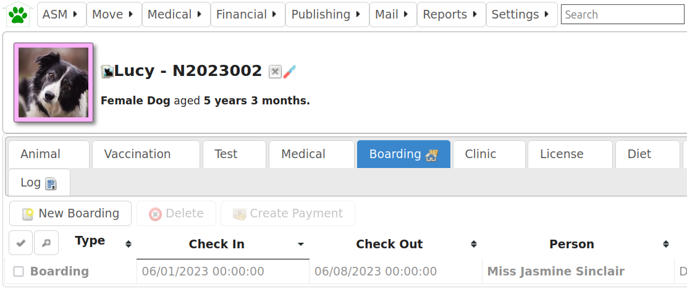
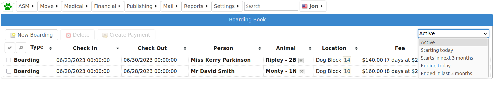

Boarding¶
The boarding interface is used to administrate the boarding of animals, create due payments and invoice customers.
Animals with an active boarding record will automatically move into the pre-selected shelter location on the check-in date and out again when the check-out date is reached.
Boarded animals will appear in shelter view with a boarding emblem next to their name.
Boarding Book¶
The boarding book located under the financial menu allows you to conveniently view boarding animals by selected periods and status.
Selecting an entry and clicking the create payment button allows you to create a due payment based on the daily boarding fee and number of days boarded. You can then use the payment screen to request electronic payment from the customer or produce an invoice.

Boarding Calendar¶

The boarding calendar is a calendar view, showing day, week and month breakdowns of animals boarding at the shelter. The location assigned to that animal for boarding is shown so that you can look for overlap and double-bookings. Clicking on the animals name in the boarding calendar will take you to the boarding tab of that animals record.